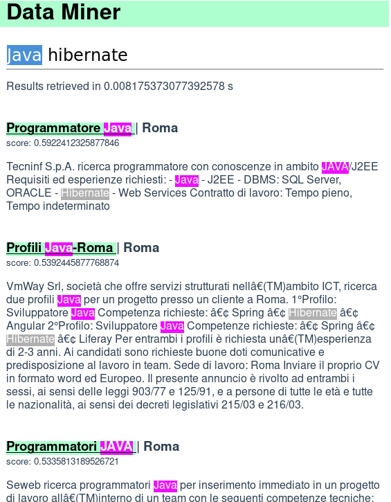
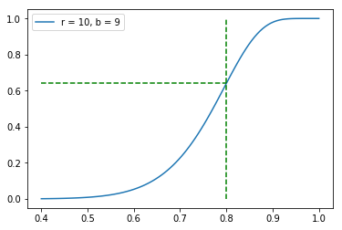
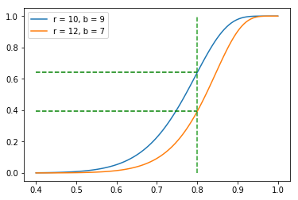

{23 Oct .. 11 Nov} 2018
The input file is the one of the previous homework i.e. a tsv having the following header
title href city timestamp descriptionThe corpus is preprocessed in the following steps:
title, city and description of the announcements are keptThe last step is performed to roughly remove stopwords (this comes at the cost of not being able to process 2 characters queries such as “GO” requiring the user to further reformulate the query to “Golang”).
The preprocessing is done through a scan over the file producing a second file with each line containing the terms of a document.
The inverted index is constructed scanning over the file twice: first to compute the document frequency and the number of documents; then to build the postings lists.
The index is used to promptly compute the similarity between a query \(q\) and a document \(d\) based on the vector space model and the cosine similarity measure.
In this scenario a document \(d\) (or a query) is represented as a vector where each component \(i\) represents a score relative to a term \(t\).
\(d[i] = TF(t, d) \cdot IDF(t)\) with \(IDF(t) = \log_{10}(N/N_t)\)
Then given a query \(q\):
\(cosineSim(d,q) = \frac{q \cdot d}{ ||q||_2 ||d||_2} = \frac{\sum_{t \in q \cap d} TF(t, q) \cdot IDF(t) \cdot TF(t, d) \cdot IDF(t)}{||q||_2 ||d||_2}\)
When processing a query we would like to retrieve the \(k\) documents having the largest cosine similarity to it. In order to make the response as fast as possible we should reduce the number of computations to be performed at query time. First we can observe that since the cosine similarity scores of all docs are divided by the 2-norm of \(q\) which is always the same we can avoid performing such calculation. Second, a part of the formula above is independent from the query thus can be pre-computed and stored.
From the observations above the postings list of a term \(t\) in the inverted index is just a list of tuples (docId, partialScore) sorted by docId with
\(partialScore(t, d) = \frac{TF(t, d) \cdot IDF(t)^2}{||d||_2}\)
where
\(||d||_2 = \sqrt{\sum_{t \in d} (TF(t, d) \cdot IDF(t))^2}\)
The processing is done in a “doc-at-a-time” fashion. When a query is issued a set of pointers to the postings lists corresponding to the terms of it is created to iterate over them. If the query contains terms that do not appear in the index they are just ignored. From the pool of pointers we take the one pointing to the minimum docId and compute the score of such document then advance the pointers accordingly.
The system is written in python3 and presented through a web interface served by a Flask server. To launch it, go in the p1/ folder and execute server.py. After some seconds a new tab will be opened in the web browser with the interface to the tool.

The decisions made work well overall. Some examples of queries and results are shown above.
In the first query a well known issue of cosine-similarity is shown: shorter documents get higher ranking since normalization penalizes longer documents. Indeed even if the first document contains only one of the query terms, still achieves a higher score than a longer document containing both terms.
In the third example the query issued is the first document retrieved. As shown in this case the score achieved by the first document is way higher than the average cases given that the query is the document itself. Moreover also the processing time increases drastically.
For this problem the preprocessed_announcements.tsv file produced by the preprocessing phase of the previous problem is used.
All the classes follow the sklearn interface:
ClassConstructor(param1 = value1, ...)transform*(dataset) method that given a list of elements each representing an item of the dataset, produces some resultThe pipeline is the following:
ShingleVectorizer which produces for each description the set of its 10-shingles (or 10-grams) and their hashed value using the MurmurHash128 hashing schemeMinwiseHasher which produces a signature of length \(r \cdot b\) of each set of hashed shingles using the hash functions with seed from \(1\) to \(r \cdot b\)LocalitySensitiveHashing which returns the set of similar pairs. First it splits each signature in \(b\) bands of size \(r\). Then it groups together the signatures having the same hash of the sub-signature in a given band. At the end it iterates over all groups producing pairs of similar documents. In doing so it is possible to specify a threshold at which the estimated Jaccard Similarity should at least be for two signatures of two documents to be considered similar. The estimation is computed as the ratio of equal entries in the signatures \(\widetilde{J}(s_1, s_2) = |\{ i: s_1[i] = s_2[i]\}| / (r \cdot b)\). Note that this phase (denoted as postfiltering later) is performed only when specified when launching the program with the -f flag.$ ./lsh.py -h
usage: LSH near duplicate detection [-h] [-k K] [-r R] [-b B] [-t T] [-i I]
[--skip-jaccard] [-f]
file
positional arguments:
file
optional arguments:
-h, --help show this help message and exit
-k K Sets the size of the k-grams (default: 10)
-r R Length of one band (default: 10)
-b B Number of bands (default: 9)
-t T Jaccard similarity threshold (default: 0.8)
-i I Index of the document column in the tsv (default: 2)
--skip-jaccard, -s Skips computing the jaccard similarity between documents
(default: False)
-f Perform postfiltering after LSH (default: False)From the scheme above and from the fact that \(Pr(s_i[k] = s_j[k]) = JacSim(d_i, d_j)\) we know that given two documents with Jaccard similarity \(s\) then the probability of them to end up in the same group in at least one band is \(1 - (1 - s^r)^b\).
When wanting to find near duplicates we must make some tradeoffs over the time to perform such task, the accuracy, whether false positives are more tolerable than false negatives and others.
In this setting we consider two documents similar if their Jaccard similarity is above \(t = 0.8\). We choose \(r \cdot b\) to be around \(100\).
The Mining of Massive Datasets book suggests to choose \(r\) and \(b\) such that \(t \approx (1/b)^{1/r}\). A pair satisfying that is \(r = 10, b = 9\) producing the following curve.

As we can see from the curve and as supported by the empirical results these parameters produce a good amount of false positives since documents with similarity below \(0.8\) still have a probability higher than \(1/2\) to be considered as similar.
If we apply postfiltering, most of the false positives will be removed resulting in good precision and recall at the expense of longer processing times due to the filtering (quadratic in the number of documents ending in the same group)
$ ./lsh.py ../data/preprocessed_announcements.tsv -f
LSH: 251.59696078300476 s passed
LSH: 1889 duplicates found
Computing Jaccard Similarity... (This might take a while)
Caching Jaccard Similarity to: preprocessed_announcements.tsv_jacc_similarities_K-10_THRESH-0.8.pickle
JAC: 887.0211551189423 s passed
JAC: 1982 duplicates found
intersection 1838
recall 0.9273461150353178
precision 0.973001588141874Contrarily if we don’t apply it, precision is strongly affected.
$ ./lsh.py ../data/preprocessed_announcements.tsv
LSH: 236.54036951065063 s passed
LSH: 2181 duplicates found
Jaccard Similarity cache found, loading...
JAC: 0 s passed
JAC: 1982 duplicates found
intersection 1868
recall 0.9424823410696267
precision 0.8564878496102705A different approach taken form the Datasketch library is to find \(r\) and \(b\) such that the area below the curve on the left side of the threshold is equal to the area above the curve on the right side of the threshold. which can be interpreted as “the probability of the process to produce a false positive is equal to the one of producing a false negative”. The parameters obtained through this scheme are \(r = 12, b = 7\)

$ ./lsh.py ../data/preprocessed_announcements.tsv -b 7 -r 12
LSH: 216.9086480140686 s passed
LSH: 1937 duplicates found
Jaccard Similarity cache found, loading...
JAC: 0 s passed
JAC: 1982 duplicates found
intersection 1777
recall 0.8965691220988901
precision 0.9173980382034074As shown above these parameters achieve better precision than the ones above (both without postfiltering).
Note that when choosing \(r = 10, b = 9\) according to the formula the probability of the algorithm to produce a false positive is twice the probability of producing a false negative.
The implementation follows the same pipeline described above using the “primitive” operations offered by the Apache Spark framework.
As shown by the time to perform the operations, the framework fully parallelizes the LSH implementation achieving a \(4\times\) speedup on a quad-core machine while poorly handling the Jaccard similarity implementation which uses the cartesian operation.
$ ./spark_lsh.py
2018-11-04 12:25:19 WARN NativeCodeLoader:62 - Unable to load native-hadoop library for your platform... using builtin-java classes where applicable
Setting default log level to "WARN".
To adjust logging level use sc.setLogLevel(newLevel). For SparkR, use setLogLevel(newLevel).
LSH: 70.75482106208801 s passed
LSH: 1889 duplicates found
JAC: 748.2767751216888 s passed
JAC: 1982 duplicates found
intersection 1838
recall 0.9273461150353178
precision 0.973001588141874